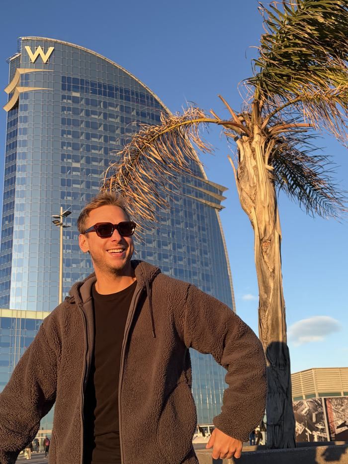

BASKETBALL · REAL ESTATE · FINANCE · DATA · AI
I used to play on the court. Now I play with data — the rules haven't changed.
From Poland's national basketball team, through commercial real estate and finance, to building AI tools. Always the same: preparation, discipline, results. I build websites, tools and apps — some make my own work easier, some just make everyday life simpler. Always in the same direction: efficiency and progress.
SCROLL↓
01 — PROJECTS
Selected projects
$ list projects
0%
✓ All listed
02 — ABOUT ME

From a Polish national basketball player to building AI tools.
Expand the full story ↓
From a Polish national basketball player to building AI tools.
Expand the full story ↓
📖 See Wikipedia profile (PL)


Poland
USA
Spain
Born in Wrocław. Polish national basketball team member (U16–U20), studied at Wrocław University of Technology, UMCS, and Kozminski University — now building a career toward data & analytics.
2008–2014
Basketball career from the ground up to the national team: multiple-time Polish champion (youth, kadet, junior, senior junior levels) and tournament MVP, Poland national team at U-16/U-18/U-19/U-20 European and World Championships. Start studying at Wrocław University of Technology in 2013, then a full athletic scholarship (~$50,000) to Canisius College (USA), NCAA Division I, in 2014.
2015
Back to Poland — continue playing (Start Lublin) and study at UMCS in Lublin.
2017–2018
Play for Siarka Tarnobrzeg, Śląsk Wrocław and Księżak Łowicz, while studying at Kozminski University.
2019
End of playing career. Bachelor's degree defended.
2020
Start working at Knight Frank as a real estate analyst.
2021
Master's degree in Finance defended.
2022
CBRE, Business Analyst — supporting transactions worth over half a billion euros combined.
2023
Computershare, Vesting Specialist — global clients (SAP, Coca-Cola, DHL, Barclays, AstraZeneca).
2024–2026
Moved to Barcelona (still with Computershare) and started learning Python and AI — a deliberate step toward a data & analytics career.

03 — CONTACT
Happy to talk about roles in data and AI.
Open to B2B collaboration, based in Warsaw.
© 2026 Jan GrzelińskiWarsaw, PL